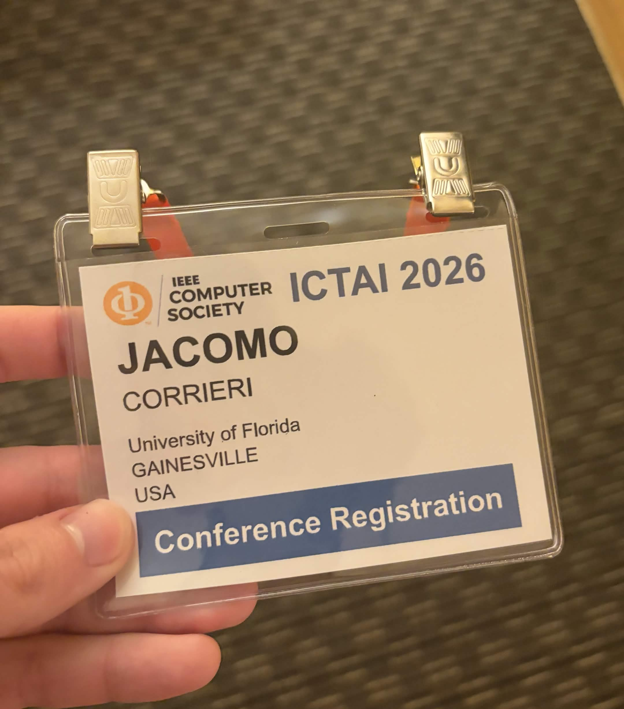
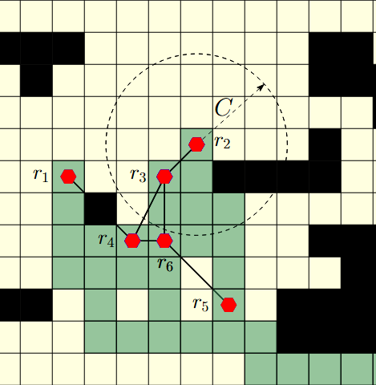

IEEE ICTAI 2026
Scalable Multi-robot Coverage with Connectivity Maintenance Via
Deep Reinforcement Learning
I led the engineering of an end-to-end research framework, from simulation and map generation to CNN-based agents and evaluation. The agents train with a centralized critic, then act from their own local observations. My first, first-author publication!
View on GitHub50robots simulated
5×prior-work scalability
+15%area coverage vs. baseline


Open research PDFPDF · 17 pages